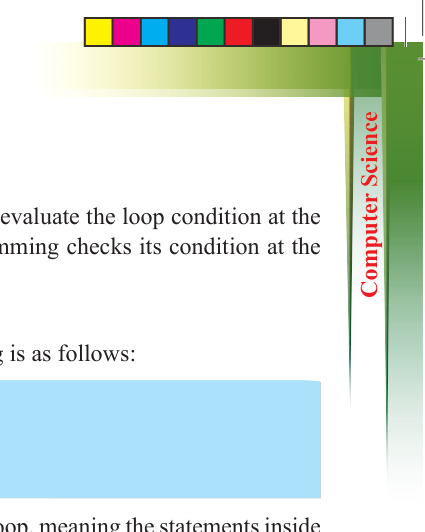
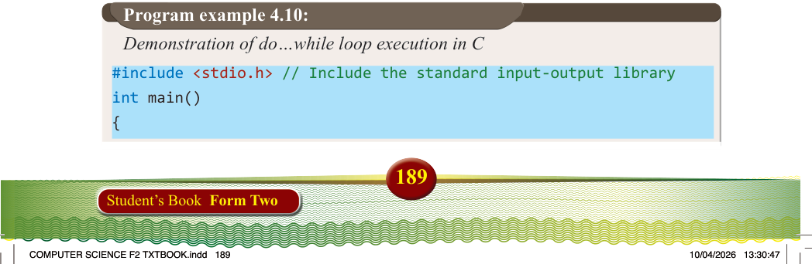
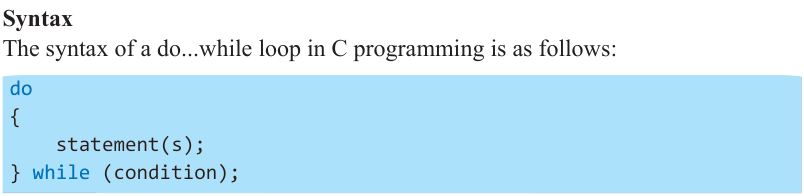
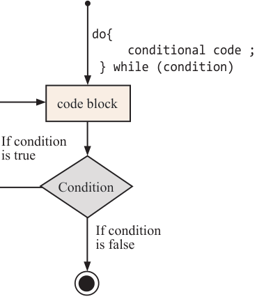

(c) do...while loop
In contrast to “while” and “for” loops, which evaluate the loop condition at the beginning, the “do...while” loop in C programming checks its condition at the end of the loop.
Syntax
The syntax of a do...while loop in C programming is as follows:

do
{ statement(s);
} while (condition);
Note: The condition is evaluated at the end of the loop, meaning the statements inside
the loop will execute at least once before the condition is checked. If the condition is true, control returns to the start of the loop, and the statements execute again. This continues until the condition is evaluated as false. Figure 4.5 shows a flow diagram for the “do…while” loop.
If condition is false
If condition is true
do{ conditional code ;
} while (condition)

Condition
code block
Figure 4.5: A do…while loop execution flowchart
#include <stdio.h> // Include the standard input-output library int main()
{
Program example 4.10:
Demonstration of do…while loop execution in C